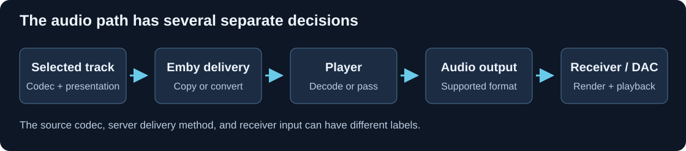

The Audio Playback Path
The library says Dolby Digital 5.1, the server says Direct Play, and the receiver says Multichannel PCM. Those observations can describe one successful session: the source was delivered unchanged, then decoded in the player.
Following the actual presentation through the stages resolves apparent contradictions.

Logical-stage schematic. Several stages can share a physical device.
Trace a retained channel presentation
Consider a player that accepts the chosen AC-3 track and can output its six channels as PCM:
| Stage | Representation or job |
|---|---|
| Selected library track | AC-3 5.1 with language and timing |
| Server delivery | The compatible stored audio is retained |
| Player decoder | Reconstructs six PCM channel signals |
| Output path | Supplies those signals in its declared layout/order |
| Receiver | Receives PCM and routes the presentation to the system |
The receiver no longer needs an AC-3 decoder for that input because the player already performed the reconstruction. Its PCM label is expected.
The result can still use decoder metadata, output gain, or bass management. To determine whether those altered the presentation, identify the specific operation rather than treating the change of codec label as the operation itself.
Trace an audio-only compatibility conversion
Now consider a seven-main-channel/LFE soundtrack whose video fits the client, but whose audio needs a stereo-compatible delivery.
- The server reads the selected audio track and decodes its channel presentation.
- A downmix combines the center and surround contributions with the fronts to produce two channels.
- A suitable audio encoder creates a stereo delivery stream.
- Compatible video is copied into the delivery package with the audio and timing.
- The client decodes that new soundtrack for its output.
Emby's Direct Stream description includes situations where compatible video is retained and audio is converted. The overall label therefore does not imply that every audio property stayed unchanged.
Here the source's eight channels and the receiver's two channels describe different points in the trace. The causal changes are downmixing and re-encoding, not simply “the receiver shows stereo.”
Place decoding and rendering independently
With bitstream passthrough, a supported encoded presentation reaches another device that decodes it. With ordinary PCM output, decoding already happened earlier.
For an immersive source, there is also a rendering job: spatial information becomes speaker or ear signals. A player can finish the render itself or carry suitable audio/metadata onward using an object-aware path such as MAT.
This makes four separate questions:
- Which presentation was selected?
- What did the server deliver?
- Where was it decoded or rendered?
- What did the output system receive?
Record changes at boundaries
A useful session report is a trace, rather than a single preferred label:
| Observation | Useful details |
|---|---|
| Source | Track role/language, codec, channel layout, rate, spatial form |
| Delivery | Copied/remuxed/encoded audio and resulting properties |
| Player output | Encoded passthrough, PCM, or metadata-bearing transport |
| Receiver input | Detected input, separate from listening mode |
| Reproduction | Speaker routing, bass handling, headphone/spatial processing |
If dialogue vanishes between a six-channel decode and stereo output, investigate that combination. If timing changes after switching output devices, investigate that boundary's delay. If object information is retained at delivery but a receiver gets ordinary PCM, identify where the render or metadata loss occurred.
Each observation now points to a particular transformation, which is more useful than treating Direct Play, PCM, or a surround-mode name as a verdict on the whole session.